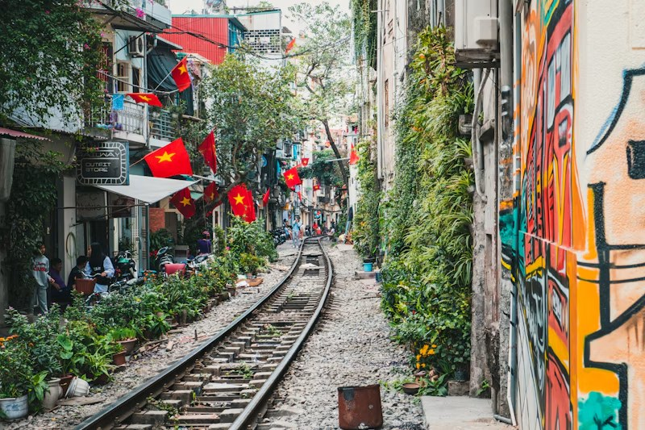
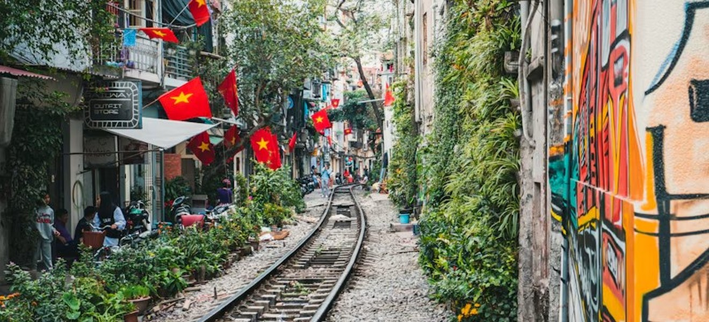

Ánh sáng tự nhiên
Nhịp sống trên phố đường tàu
Cờ đỏ và mảng xanh hai bên đường ray tạo nên điểm nhấn cho khung hình.
Cộng đồng nhiếp ảnh đường phố sinh viên Hà Nội
Ống Kính là không gian kết nối những bạn trẻ yêu nhiếp ảnh phim, máy số và điện thoại. Chúng mình cùng nhau đi bộ dọc các tuyến phố cổ, khu tập thể cũ và chia sẻ góc nhìn chân thực về Hà Nội.

Tuyển tập các khung hình tiêu biểu được thực hiện bằng thiết bị cá nhân trong tháng vừa qua.

Cờ đỏ và mảng xanh hai bên đường ray tạo nên điểm nhấn cho khung hình.
Đường chân trời và sắc hoàng hôn mở rộng chiều sâu cho khung cảnh.
Những tách cà phê và mặt bàn gỗ tạo nên một khoảnh khắc đời thường gần gũi.
Các buổi thực hành mở cửa tự do cho sinh viên mới bắt đầu làm quen với nhiếp ảnh.
| Chủ đề buổi sinh hoạt | Thời gian | Địa điểm tập trung | Yêu cầu thiết bị |
|---|---|---|---|
| Làm chủ tam giác phơi sáng ngoài trời | 08:00 - 10:30, Chủ nhật | Vườn hoa Lý Thái Tổ, Hoàn Kiếm | Máy ảnh hoặc điện thoại chỉnh tay |
| Photowalk: Ký ức khu tập thể cũ | 15:00 - 17:30, Thứ Bảy | Cổng trường ĐH Kiến Trúc, Hà Đông | Mọi thiết bị ghi hình cá nhân |
| Hậu kỳ màu phim cơ bản trên Lightroom | 19:30 - 21:00, Thứ Tư | Sinh hoạt trực tuyến qua Google Meet | Laptop cài sẵn phần mềm chỉnh ảnh |
Điền thông tin bên cạnh để nhận lịch tập trung và tài liệu hướng dẫn bố cục cơ bản trước buổi chụp.